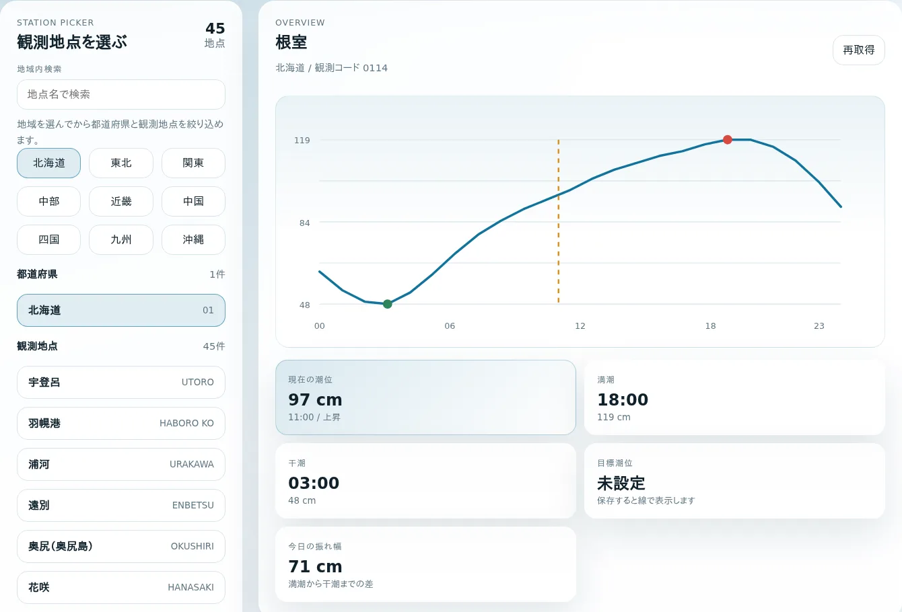

DAILY TIDE TOOL
潮位なび 今日の潮位を、地点から読む
日本各地の観測地点を選び、今日の潮位をグラフと時間帯別の一覧で確認するウェブアプリです。 満潮・干潮の目安や一日の振れ幅を見ながら、釣行などに使う目標潮位も地点ごとに残せます。
- 地点選択
- 地域・都道府県・観測地点から絞り込む
- 一日の表示
- グラフ、満潮・干潮、時間帯別潮位
- 個人用の目印
- 地点ごとに目標潮位とラベルを保存

観測地点を選ぶ
地域から順に絞り込む方法と、地点名で直接検索する方法があります。
- 地域を選ぶ。 北海道、東北、関東、中部、近畿、中国、四国、九州、沖縄から対象地域を選びます。
- 都道府県を選ぶ。 選んだ地域に含まれる都道府県へ候補を絞ります。
- 観測地点を選ぶ。 地点を切り替えると、その地点の当日データを取得して表示します。地点名が分かる場合は検索欄から探せます。
最後に選んだ観測地点はブラウザに保存され、次回アクセスしたときにも同じ地点を開けます。
グラフと数値を読む
一日の変化は、潮位グラフ、概要カード、時間帯別の一覧を組み合わせて確認します。
- 潮位グラフ
- 0時から23時までの潮位を線でつなぎ、現在の時間帯、満潮、干潮、保存した目標潮位の位置を重ねて表示します。
- 現在・満潮・干潮
- 「現在の潮位」は現在時刻を含む時間帯の値です。満潮と干潮には、当日の時間帯別データの中で最も高い値と最も低い値を示します。
- 今日の振れ幅
- 表示している満潮の値から干潮の値を引いた差です。一日の中で潮位がどの程度動くかを見比べられます。
- 時間帯別潮位
- 1時間ごとの値と、時間帯の中で上昇・下降・横ばいのどの方向へ動いたかを一覧で確認できます。
画面の数値は、取得した一日の潮位系列を1時間単位で平均した要約値です。リアルタイムの実測値や、分単位の厳密な満潮・干潮時刻を示すものではありません。
目標潮位を残す
「目標潮位」に潮位と短いラベルを入力して保存すると、グラフに水平線として表示されます。 たとえば、過去の釣行で参考になった潮位を「釣行の目安」として残し、当日の曲線と見比べられます。
目標潮位は観測地点ごとに分けてブラウザ内へ保存されます。別の地点へ切り替えても設定は混ざらず、不要になった目標は「クリア」で削除できます。
データと注意点
潮位なびは、海上保安庁の「海しる」APIから取得した情報をもとに表示を作成しています。 サービスの内容は海上保安庁によって保証されたものではありません。
表示対象は当日分です。通信状況やデータ提供側の状態によって、観測地点や潮位データを取得できない場合があります。 その場合は画面の「再取得」から更新できます。
航行、防災、避難など安全に関わる判断には、このアプリだけを使わず、海上保安庁、気象庁、自治体などが提供する最新の公式情報も確認してください。
近くの観測地点を選ぶ
地域または地点名から観測地点を探し、今日の潮位の動きを確認できます。